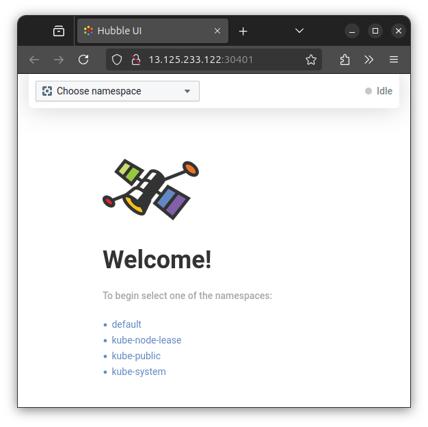
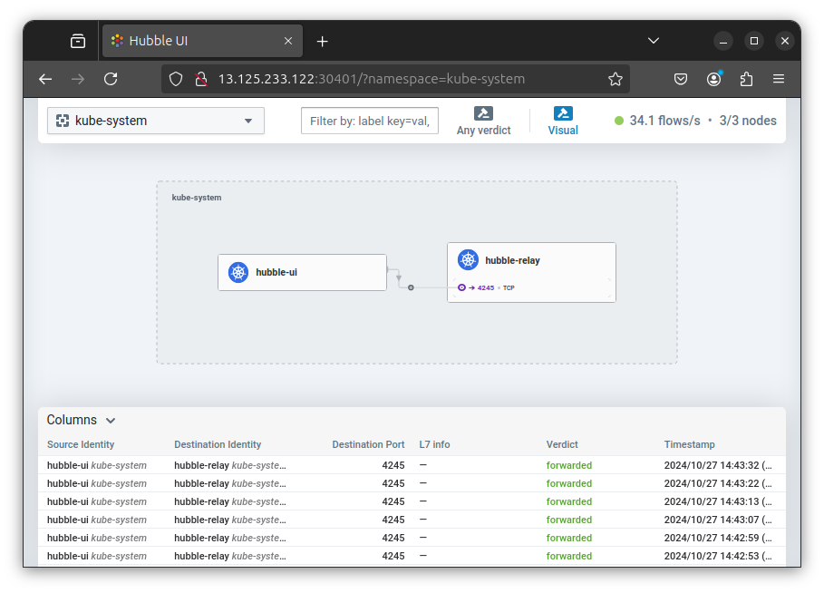

그럼 매번 실패만 했던 Cilium 배포를 한번 해볼까요?
CloudNet@에서 진행하고 있는 K8s Advanced Network Study(이하, KANS)를 통해 학습한 내용을 정리합니다.
1. CSP VM 골라보기
이렇게 쓴 이유는 결국 네트워크를 잘 알아야하는데,
작년에 할 때는 그런거 생각도 안하고 그냥 올려보려 했으니 당연히 안 돌아가겠죠?
그냥 곰곰히 오리duckduckgo랑 투닥거리다보니, 비록 연식이 되긴 했지만
클릭을 안하고는 못배길 위의 블로그 제목이 눈에 띄였습니다.
a. 사전 조사
- 커널:
- 현재 리눅스 커널 버전이 마이너 버전은 못 외우겠지만, 대충 메이저가 6버전이니 PASS
- NIC:
- ENA(Elastic Network Adapter) 드라이버 언급이 나온 것으로 봐선,
지원 인스턴스를 올리면 덜 헤멜 것 같은 느낌이 듭니다.
- MTU 상한:
- cilium 최신 버전도 상한값이 3818인지 확인하면 좋을 듯합니다.
- NIC channels for RX/TX Queue:
- 절반 이상을 비워야한다는데, 채널 수 모르면 좀 많이 헤맬 것 같습니다.
b. AWS CLI로 확인
- Docs:
스터디에서 제공된 CloudFormation파일 중 AMI은
Canonical에서 관리하는 SSM 파라미터를 통해 최신화를 할 수 있었습니다.
그래서 그냥 이 SSM 파라미터를 통해 AMI ID를 얻어와 보죠.
aws ssm get-parameters --names /aws/service/canonical/ubuntu/server/22.04/stable/current/amd64/hvm/ebs-gp2/ami-id --region ap-northeast-2
{
"Parameters": [
{
"Name": "/aws/service/canonical/ubuntu/server/22.04/stable/current/amd64/hvm/ebs-gp2/ami-id",
"Type": "String",
"Value": "ami-042e76978adeb8c48",
"Version": 30,
"LastModifiedDate": "2024-09-27T13:11:50.127000+09:00",
"ARN": "arn:aws:ssm:ap-northeast-2::parameter/aws/service/canonical/ubuntu/server/22.04/stable/current/amd64/hvm/ebs-gp2/ami-id",
"DataType": "aws:ec2:image"
}
],
"InvalidParameters": []
}
당연히 enaSupport가 true로 나오네요.
aws ec2 describe-images --image-id ami-042e76978adeb8c48 --query "Images[].EnaSupport"
# [
# true
# ]
눈감고 c5.16xlarge 를 띄워볼까 싶긴한데, 아래 문서에서 Nitro v2 버전 탭에 T3도 있는 것을 확인했네요.
Cloudformation YAML에 기본 정의된 t3.xlarge를 써보겠습니다.
c. 프로비저닝 후 기본 체크
-
스터디에서 제공된 대로,
kube-proxy없이 운용 테스트를 할 것이기에 확인을 해보겠습니다. -
이미
kubeadm배포 시,--skip-phases=addon/kube-proxyparam이 적용되어 있습니다. -
No
kube-proxy
# Access to Control Plane Node
ssh -i $Keypair ubuntu@$ControlPlaneIP
# Not ready because of no kube-proxy
kubectl get nodes
# NAME STATUS ROLES AGE VERSION
# k8s-s NotReady control-plane 14m v1.30.6
# k8s-w1 NotReady <none> 13m v1.30.6
# k8s-w2 NotReady <none> 13m v1.30.6
# No kube-proxy
kubectl cluster-info
# Kubernetes control plane is running at https://192.168.10.10:6443
# CoreDNS is running at https://192.168.10.10:6443/api/v1/namespaces/kube-system/services/kube-dns:dns/proxy
# No kube-proxy
kubectl get pod -A
# NAMESPACE NAME READY STATUS RESTARTS AGE
# kube-system coredns-55cb58b774-h9dnm 0/1 Pending 0 14m
# kube-system coredns-55cb58b774-vjzrk 0/1 Pending 0 14m
# kube-system etcd-k8s-s 1/1 Running 0 14m
# kube-system kube-apiserver-k8s-s 1/1 Running 0 14m
# kube-system kube-controller-manager-k8s-s 1/1 Running 0 14m
# kube-system kube-scheduler-k8s-s 1/1 Running 0 14m
- 커널 확인: 안해도 되지만, 한번 보겠습니다.
# Kernel Version
uname -a
# Linux k8s-s 6.8.0-1015-aws #16~22.04.1-Ubuntu SMP Mon Aug 19 19:38:17 UTC 2024 x86_64 x86_64 x86_64 GNU/Linux
hostnamectl | grep Kernel
# Kernel: Linux 6.8.0-1015-aws
# XDP Support
grep -i CONFIG_XDP_SOCKETS /boot/config-$(uname -r)
# CONFIG_XDP_SOCKETS=y
# CONFIG_XDP_SOCKETS_DIAG=m
- NIC 확인
netplan status | grep ethernet
# ● 1: lo ethernet UNKNOWN/UP (unmanaged)
# ● 2: ens5 ethernet UP (networkd: ens5)
# MTU
ip link show ens5 | grep mtu
# 2: ens5: <BROADCAST,MULTICAST,UP,LOWER_UP> mtu 9001 qdisc mq state UP mode DEFAULT group default qlen 1000
# RX/TX Queue
ethtool -l ens5
# Channel parameters for ens5:
# Pre-set maximums:
# RX: n/a
# TX: n/a
# Other: n/a
# Combined: 4
# Current hardware settings:
# RX: n/a
# TX: n/a
# Other: n/a
# Combined: 4
# Driver
ethtool -i ens5 | grep ena
# driver: ena
Cilium에서 요구사항을 따로 살펴봐야겠지만,
MTU 및 RX/TX Queue 관련 채널 값을 바꿔야할 것으로 보입니다.
2. Cilium 설치
- 설치 전에 미리 OS에서 파라미터 조정을 해보겠습니다.
a. 파라미터 조정
크게 두 가지 파라미터 조정해둡니다.
- Maxium MTU: 3498
- 최신문서(v1.16.3)에서는 값이 더 낮아져서 3498로 조정합니다.
- RX/TX Queue: more than half
RX/TX Queue는 그렇다고 치고, MTU의 경우에는 왜 조정해야되는지 아래에도 설명되어있으니 참조하시면 됩니다.
# MTU
ip link set dev ens5 mtu 3498
ip link show ens5 | grep mtu
2: ens5: <BROADCAST,MULTICAST,UP,LOWER_UP> mtu 3498 qdisc mq state UP mode DEFAULT group default qlen 1000
# RX/TX Queue
ethtool -L ens5 combined 1
ethtool -l ens5
# Channel parameters for ens5:
# Pre-set maximums:
# RX: n/a
# TX: n/a
# Other: n/a
# Combined: 4
# Current hardware settings:
# RX: n/a
# TX: n/a
# Other: n/a
# Combined: 1
b. Cilium CLI 설치
그냥 혹시 모르니 Cilium CLI 설치 미리 해두겠습니다. 아직 Major가 v1은 아닙니다.
- Docs: Install the Cilium CLI
curl -s https://raw.githubusercontent.com/cilium/cilium-cli/main/stable.txt
# v0.16.19
CILIUM_CLI_VERSION=$(curl -s https://raw.githubusercontent.com/cilium/cilium-cli/main/stable.txt)
CLI_ARCH=amd64
if [ "$(uname -m)" = "aarch64" ]; then CLI_ARCH=arm64; fi
curl -L --fail --remote-name-all https://github.com/cilium/cilium-cli/releases/download/${CILIUM_CLI_VERSION}/cilium-linux-${CLI_ARCH}.tar.gz{,.sha256sum}
sha256sum --check cilium-linux-${CLI_ARCH}.tar.gz.sha256sum
sudo tar xzvfC cilium-linux-${CLI_ARCH}.tar.gz /usr/local/bin
rm cilium-linux-${CLI_ARCH}.tar.gz{,.sha256sum}
버전 확인을 안내대로 해봅시다.
cilium version --client
# cilium-cli: v0.16.19 compiled with go1.23.1 on linux/amd64
# cilium image (default): v1.16.2
# cilium image (stable): v1.16.3
c. helm 배포
그냥 실패하면 cilium CLI로 설치하고 눈 감겠습니다.
helm repo add cilium https://helm.cilium.io/
# "cilium" has been added to your repositories
helm repo update
# Hang tight while we grab the latest from your chart repositories...
# ...Successfully got an update from the "cilium" chart repository
# Update Complete. ⎈Happy Helming!⎈
helm install cilium cilium/cilium --version 1.16.3 --namespace kube-system \
--set k8sServiceHost=192.168.10.10 --set k8sServicePort=6443 --set debug.enabled=true \
--set rollOutCiliumPods=true --set routingMode=native --set autoDirectNodeRoutes=true \
--set bpf.masquerade=true --set bpf.hostRouting=true --set endpointRoutes.enabled=true \
--set ipam.mode=kubernetes --set k8s.requireIPv4PodCIDR=true --set kubeProxyReplacement=true \
--set ipv4NativeRoutingCIDR=192.168.0.0/16 --set installNoConntrackIptablesRules=true \
--set hubble.ui.enabled=true --set hubble.relay.enabled=true --set prometheus.enabled=true --set operator.prometheus.enabled=true --set hubble.metrics.enableOpenMetrics=true \
--set hubble.metrics.enabled="{dns:query;ignoreAAAA,drop,tcp,flow,port-distribution,icmp,httpV2:exemplars=true;labelsContext=source_ip\,source_namespace\,source_workload\,destination_ip\,destination_namespace\,destination_workload\,traffic_direction}" \
--set operator.replicas=1
- 주요 파라미터 설명
| 파라미터 | 설명 |
|---|---|
| debug.enabled | cilium 파드에 로그 레벨을 debug 설정 |
| autoDirectNodeRoutes | 동일 대역 내의 노드들 끼리는 상대 노드의 podCIDR 대역의 라우팅이 자동으로 설정 |
| endpointRoutes.enabled | 호스트에 endpoint(파드)별 개별 라우팅 설정 |
| hubble.relay.enabled | hubble 활성화 |
| hubble.ui.enabled | hubble UI 활성화 |
| ipam.mode | k8s IPAM 활용 |
| k8s.requireIPv4PodCIDR | k8s에서 IPv4 Pod CIDR를 요구 |
| kubeProxyReplacement | kube-proxy 없이 (최대한) 대체할수 있수 있게 |
| ipv4NativeRoutingCIDR=192.168.0.0/16 | 해당 대역과 통신 시 IP Masq 하지 않음, 보통 사내망 대역을 지정 |
| operator.replicas | cilium-operator 파드 기본 1개 |
| enableIPv4Masquerade | 파드를 위한 Masquerade |
| bpf.masquerade | 추가로 Masquerade 을 BPF 로 처리 |
NAME: cilium
LAST DEPLOYED: Sun Oct 27 11:58:59 2024
NAMESPACE: kube-system
STATUS: deployed
REVISION: 1
TEST SUITE: None
NOTES:
You have successfully installed Cilium with Hubble Relay and Hubble UI.
Your release version is 1.16.3.
For any further help, visit https://docs.cilium.io/en/v1.16/gettinghelp
… 스터디에서 안내해주신 파라미터를 넣어서 했습니다만, 이게 왜 되지…?
이제, 추가 파라미터 주입안해도 정상적으로 해당 버전이 작동하고 있다고 확인할 수 있었습니다.
cilium version
# cilium-cli: v0.16.19 compiled with go1.23.1 on linux/amd64
# cilium image (default): v1.16.2
# cilium image (stable): v1.16.3
# cilium image (running): 1.16.3
3. Cilium 살펴보기
a. 배포 이후 상태
이제 kube-proxy 없이도 각 Node가 Ready 상태임을 확인할 수 있습니다.
kubectl get nodes
# NAME STATUS ROLES AGE VERSION
# k8s-s Ready control-plane 20h v1.30.6
# k8s-w1 Ready <none> 20h v1.30.6
# k8s-w2 Ready <none> 20h v1.30.6
kube-proxy는 없습니다.
kubectl get pods -A
# NAMESPACE NAME READY STATUS RESTARTS AGE
# kube-system cilium-2g4bh 1/1 Running 0 91m
# kube-system cilium-522nn 1/1 Running 0 91m
# kube-system cilium-csdd7 1/1 Running 0 91m
# kube-system cilium-envoy-82drs 1/1 Running 0 91m
# kube-system cilium-envoy-96vst 1/1 Running 0 91m
# kube-system cilium-envoy-gnh2q 1/1 Running 0 91m
# kube-system cilium-operator-76bb588dbc-57945 1/1 Running 0 91m
# kube-system coredns-55cb58b774-h9dnm 1/1 Running 0 20h
# kube-system coredns-55cb58b774-vjzrk 1/1 Running 0 20h
# kube-system etcd-k8s-s 1/1 Running 0 20h
# kube-system hubble-relay-88f7f89d4-r4ccq 1/1 Running 0 91m
# kube-system hubble-ui-59bb4cb67b-l5ttc 2/2 Running 0 91m
# kube-system kube-apiserver-k8s-s 1/1 Running 0 20h
# kube-system kube-controller-manager-k8s-s 1/1 Running 0 20h
# kube-system kube-scheduler-k8s-s 1/1 Running 0 20h
kubectl get svc -A
# NAMESPACE NAME TYPE CLUSTER-IP EXTERNAL-IP PORT(S) AGE
# default kubernetes ClusterIP 10.10.0.1 <none> 443/TCP 20h
# kube-system cilium-envoy ClusterIP None <none> 9964/TCP 93m
# kube-system hubble-metrics ClusterIP None <none> 9965/TCP 93m
# kube-system hubble-peer ClusterIP 10.10.161.48 <none> 443/TCP 93m
# kube-system hubble-relay ClusterIP 10.10.150.231 <none> 80/TCP 93m
# kube-system hubble-ui ClusterIP 10.10.183.16 <none> 80/TCP 93m
# kube-system kube-dns ClusterIP 10.10.0.10 <none> 53/UDP,53/TCP,9153/TCP 20h
NAT 테이블에 설정된 모든 규칙을 알아봅시다: iptables -t -nat -S
iptables -t nat -S
# -P PREROUTING ACCEPT
# -P INPUT ACCEPT
# -P OUTPUT ACCEPT
# -P POSTROUTING ACCEPT
# -N CILIUM_OUTPUT_nat
# -N CILIUM_POST_nat
# -N CILIUM_PRE_nat
# -N KUBE-KUBELET-CANARY
# -A PREROUTING -m comment --comment "cilium-feeder: CILIUM_PRE_nat" -j CILIUM_PRE_nat
# -A OUTPUT -m comment --comment "cilium-feeder: CILIUM_OUTPUT_nat" -j CILIUM_OUTPUT_nat
# -A POSTROUTING -m comment --comment "cilium-feeder: CILIUM_POST_nat" -j CILIUM_POST_nat
b. Cilium CLI 활용하기
Sigrid Jin님의 가이드를 참조했습니다.
Alias 설정을 해두면 편하게 사용할 수 있다고 하니, 일단 해봅시다.
helm 배포 시, kube-proxy를 대체하도록 설정하였으니,
마지막에 당연히 True가 나오긴 해야합니다.
kubectl get -l k8s-app=cilium pods -n kube-system --field-selector spec.nodeName=k8s-s -o jsonpath='{.items[0].metadata.name}'
# cilium-522nn
export CILIUMPOD0=$(kubectl get -l k8s-app=cilium pods -n kube-system --field-selector spec.nodeName=k8s-s -o jsonpath='{.items[0].metadata.name}')
kubectl exec -it $CILIUMPOD0 -n kube-system -c cilium-agent -- cilium status
# KVStore: Ok Disabled
# Kubernetes: Ok 1.30 (v1.30.6) [linux/amd64]
# Kubernetes APIs: ["EndpointSliceOrEndpoint", "cilium/v2::CiliumClusterwideNetworkPolicy", "cilium/v2::CiliumEndpoint", "cilium/v2::CiliumNetworkPolicy", "cilium/v2::CiliumNode", "cilium/v2alpha1::CiliumCIDRGroup", "core/v1::Namespace", "core/v1::Pods", "core/v1::Service", "networking.k8s.io/v1::NetworkPolicy"]
# KubeProxyReplacement: True [ens5 192.168.10.10 fe80::b1:11ff:feba:7ce9 (Direct Routing)]
# Host firewall: Disabled
# SRv6: Disabled
# CNI Chaining: none
# CNI Config file: successfully wrote CNI configuration file to /host/etc/cni/net.d/05-cilium.conflist
# Cilium: Ok 1.16.3 (v1.16.3-f2217191)
# NodeMonitor: Listening for events on 4 CPUs with 64x4096 of shared memory
# Cilium health daemon: Ok
# IPAM: IPv4: 4/254 allocated from 172.16.0.0/24,
# IPv4 BIG TCP: Disabled
# IPv6 BIG TCP: Disabled
# BandwidthManager: Disabled
# Routing: Network: Native Host: BPF
# Attach Mode: TCX
# Device Mode: veth
# Masquerading: BPF [ens5] 192.168.0.0/16 [IPv4: Enabled, IPv6: Disabled]
# Controller Status: 29/29 healthy
# Proxy Status: OK, ip 172.16.0.231, 0 redirects active on ports 10000-20000, Envoy: external
# Global Identity Range: min 256, max 65535
# Hubble: Ok Current/Max Flows: 4095/4095 (100.00%), Flows/s: 26.15 Metrics: Ok
# Encryption: Disabled
# Cluster health: 3/3 reachable (2024-10-27T05:05:44Z)
# Modules Health: Stopped(0) Degraded(0) OK(45)
alias c0="kubectl exec -it $CILIUMPOD0 -n kube-system -c cilium-agent -- cilium"
c0 status | grep KubeProxyReplacement
# KubeProxyReplacement: True [ens5 192.168.10.10 fe80::b1:11ff:feba:7ce9 (Direct Routing)]
iptables MASQ 대신 eBPF MASQ 사용을 아래와 같이 확인할 수 있습니다.
cilium config view | grep -i masq
# enable-bpf-masquerade true
# enable-ipv4-masquerade true
# enable-ipv6-masquerade true
# enable-masquerade-to-route-source false
c. Hubble UI
가시성이 있는 것을 다들 좋아하고, 저도… 살짝 께름칙하지만 좋아하기 때문에
Hublle UI를 띄워볼까요?
이미 helm을 통해서, 해당 서비스가 올라와 있는 것을 확인합니다.
kubectl get -n kube-system svc hubble-ui
# NAME TYPE CLUSTER-IP EXTERNAL-IP PORT(S) AGE
# hubble-ui ClusterIP 10.10.183.16 <none> 80/TCP 146m
이걸 살짝 맘에는 안들지만 NodePort로 노출시켜봅시다.
kubectl patch -n kube-system svc hubble-ui -p '{"spec": {"type": "NodePort"}}'
# service/hubble-ui patched
b
HubbleUiNodePort=$(kubectl get svc -n kube-system hubble-ui -o jsonpath={.spec.ports[0].nodePort})
# 30401
echo -e "Hubble UI URL = http://$(curl -s ipinfo.io/ip):$HubbleUiNodePort"Port"
# Hubble UI URL = http://13.125.233.122:30401
우오오오… UI 잘 뜨네요.

아무것도 안띄워서, kube-system 살펴보겠습니다.

9. 뱀다리
a. Netplan
Ubuntu 에서는 언제부터인지 기억이 안나는데, 기본값으로 netplan을 네트워크 설정 도구로 사용합니다.
YAML로 네트워크 설정을 할 수 있다는 점을 포함해 많은 이점도 있고,
버전 엡데이트를 통해 개선이 많이 이루어져서 관심이 있다면 살펴보는 것도 좋을 것 같습니다.
실제로도 Ubuntu 기반의 EC2를 살펴보면 다음과 같습니다.
cat /etc/netplan/50-cloud-init.yaml
# # This file is generated from information provided by the datasource. Changes
# # to it will not persist across an instance reboot. To disable cloud-init's
# # network configuration capabilities, write a file
# # /etc/cloud/cloud.cfg.d/99-disable-network-config.cfg with the following:
# # network: {config: disabled}
# network:
# ethernets:
# ens5:
# dhcp4: true
# dhcp6: false
# match:
# macaddress: 02:b1:11:ba:7c:e9
# set-name: ens5
# version: 2
b. 그래서 XDP는 어디에 있나요?
이 글에서 일단 helm으로 hubble UI까지 뜨는 것을 봤으니, 언젠가… 이어서 써보고 싶네요.
Reference
중간에 언급된 Docs 외에 참고한 유용한 링크입니다.

kkumtree
Source code on GitHub
© 2024 kkumtree and contributors All rights reserved.
Licensed under
CC BY-NC-ND 4.0